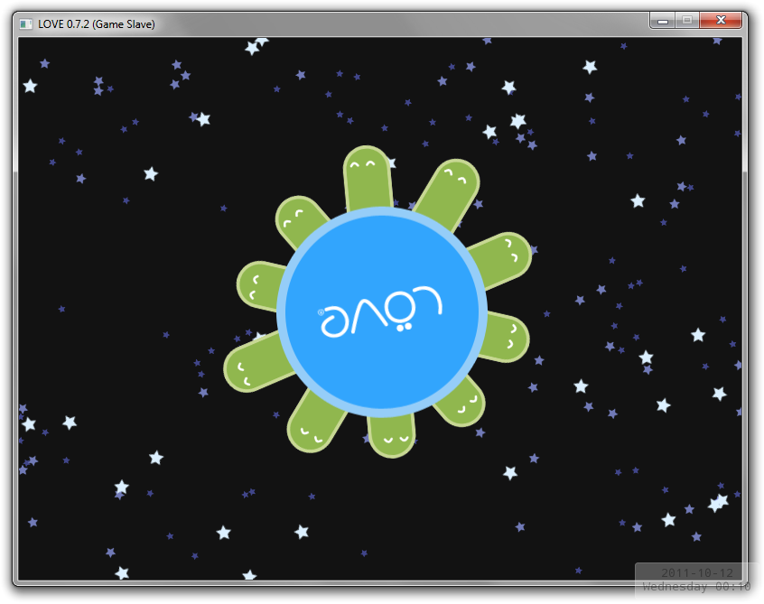

0.7.2
From LOVE


The codename of LÖVE 0.7.2 is "Game Slave". It is currently released.
Changes from 0.7.1
Additions
- Added Framebuffer:get/setWrap.
- Added love.event.clear.
- Added support for any number of arguments to love.keyboard.isDown, love.mouse.isDown and love.joystick.isDown.
- Added SpriteBatch:setImage.
Bugfixes
- Fixed fused games not working.
- Fixed ParticleSystem:setSize ignoring the variation argument.
- Fixed some file-opening exceptions not being caught.
- Fixed files loaded by libmodplug being too loud.
- Fixed paths with periods in them not working.
- Fixed love.graphics.getBlendMode not detecting subtractive and multiplicative blend modes.
- Fixed crash when there was no memory available for newImageData(w, h).
Other
- Updated PhysicsFS version to 2.0.2 on Windows
- Updated OpenAL Soft version to 1.13 on Windows
- Updated libmodplug version to 0.8.8.1 on Windows
- Updated FreeType version to 2.4.4 on Windows
- Updated libmpg123 version to 1.13.2 on Windows
- Windows binary no longer depends on VC2005 runtime.
- Windows binary no longer depends on SSE2 support.
Categories: